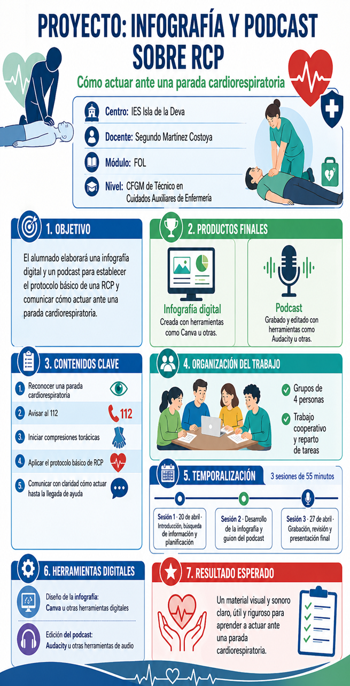

INSTRUCCIONES, TEMPORALIZACIÓN Y TAREAS
TEMPORALIZACIÓN Y TAREAS

INSTRUCCIONES
Sesión 1. Búsqueda de la información necesaria, 29 de abril de 18,40 a 19,35,. En esta sesión se buscará información relacionada con la reanimación cardiopulmonar y los pasos a seguir en una emergencia de este tipo. El objetivo es comprender el tema y seleccionar la información necesaria.
Sesión 2.- diseño de la infografía, 30 de abril de 20,30 a 21,25. En esta sesión se realizará la infografía visual. El tríptico debe ser claro, breve, útil y atractivo.
- Título claro
- Imagen o icono relacionado con el tema
- Explicación breve
- Ideas principales bien organizadas
Herramientas.- Canva o Genially
Entrega del enlace en teams o PDF
Sesión 3.-elaboración del guion del podcast, 6 de mayo de 18,40 a 19,35.
En esta sesión se preparará el guion del podcast. El audio debe durar entre 3 y 5 minutos y explicar el tema de forma clara, ordenada y comprensible.
La estructura recomendada del podcast es:
Introducción.- presentación del tema, personas del grupo, docente del módulo y ciclo formativo.
Desarrollo.- explicación breve y clara
Consejos.- recomendaciones principales
Cierre.- recordatorio final
Tarea de la sesión
El grupo redactará el guión en Word y debe quedar claro que parte de la tarea corresponde a cada integrante del grupo
Producto de la sesión
Guión completo del podcast a entregar en tarea de teams. Se podrá realizar ya la grabación del podcast
Sesión 4.- grabación del podcast y entrega final, el día 7 de mayo de 20,30 a 21,25
En esta última sesión se grabará el podcast y se revisará la infografía antes de su entrega. Es importante comprobar que el mensaje se entiende bien, que el audio se escucha con claridad y que el trabajo está completo.
Herramientas para grabar: Audacity, Vocaroo, grabadora del móvil u otras herramientas válidas para tal fin. El tiempo del podcast será de entre 3 y 5 minutos.
Entrega: por tarea del Teams en MP3 y el enlace de la infografía a través del Teams. Se puede hacer un video donde conste la infografía y el podcast.
...